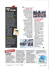
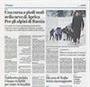
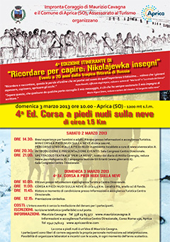

home
chi sono
progetti
a piedi nudi nella neve
Aprica (SO) - 3 Marzo 2013
S. Stefano D'Aveto (GE) - 6 Gennaio 2012
Oltre Il Colle (BG) - 30 Dicembre 2010
Roncobello (BG) - 2 Gennaio 2010
L'Umana patata
Montevecchia (LC) - 26 Febbraio 2012
Cernusco sul Naviglio (MI) - 14 Maggio 2011
Oltre Il Colle (BG) - 15 Maggio 2010
Roncobello (BG) - 2 Maggio 2009
consulenze
laboratori / proposte per la scuola
conferenze
corsi
riflessioni
prossimi eventi
newsletter
contatti
progetti // corsa a piedi nudi nella neve // IV° edizione
Sabato 2 Marzo / Domenica 3 Marzo 2013 - Aprica (SO)
Spirito della manifestazione
Calendario evento
Presentazione evento
Minicorsa
Spettacolo teatrale
Corsa a piedi nudi sulla neve
Immagini del Percorso
Come arrivare
Alberghi
Iscrizioni
rassegna stampa
rassegna stampa
Action Magazine
La Provincia di Sondrio



clicca sull'immagine per scaricare la locandina
clicca per scaricare il volantino